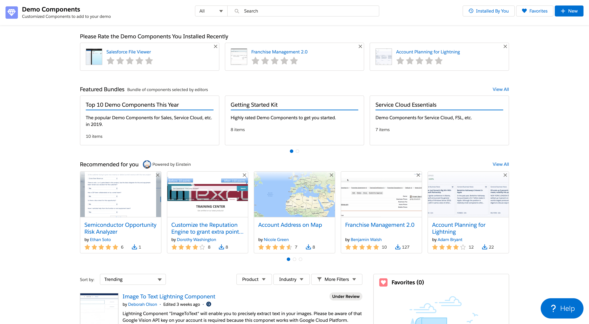
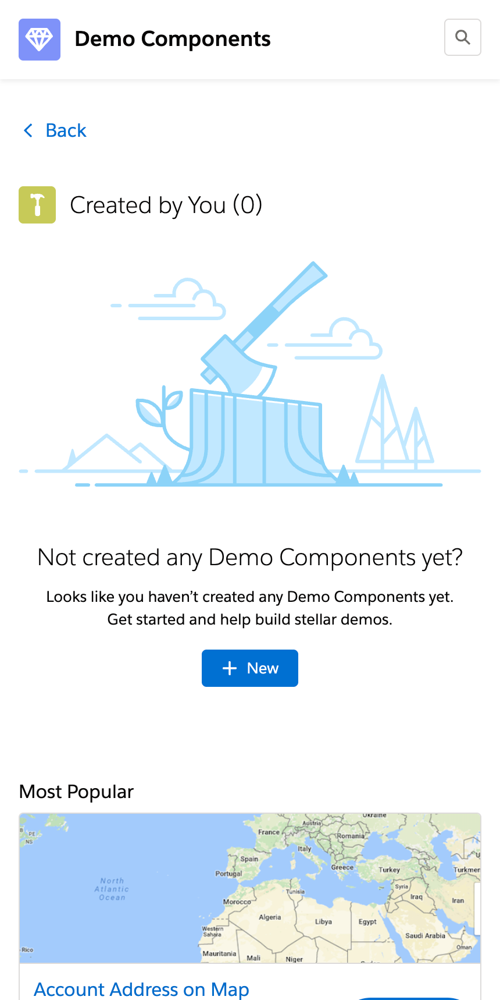
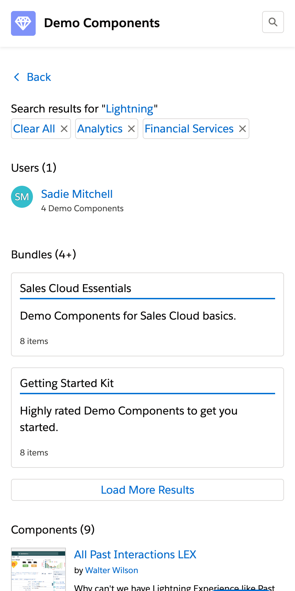
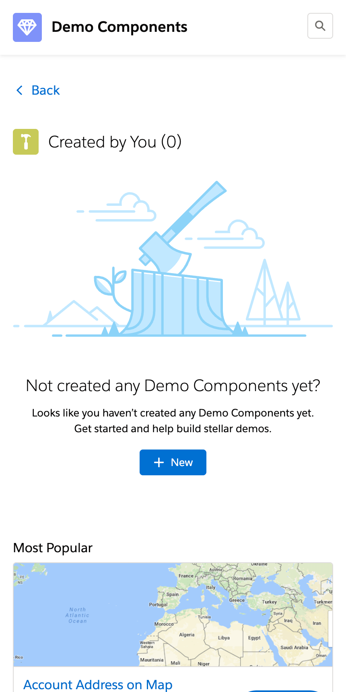
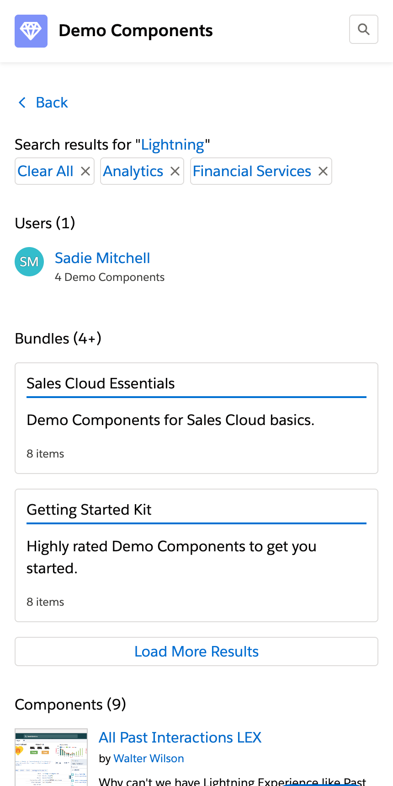

How Might We...
... enable intuitive and seamless user interaction on demo components, and encourage more contribution amongst Solutions Engineers at Salesforce?
The demo components library is an internal marketplace for state-of-the-art business apps and solutions for pre-sales employees to streamline the creation of customer-facing demos of Salesforce products. I coordinated the migration and ground-up revamp of the legacy system with a global team of designers and engineers, transforming it into a dedicated AppExchange-style platform.
Historically, demo components were created by a dedicated team of demo engineers and designers and distributed via our internal org standard interface. This initial catalog of assets was hard to navigate for end users. Technically speaking, it was difficult to maintain, challenging to measure the impact on the business. Overall, we had troubles to innovate and scale at the pace of our company.
 Demo components homepage is accessible from multiple endpoints, always here when needed.... enable intuitive and seamless user interaction on demo components, and encourage more contribution amongst Solutions Engineers at Salesforce?
Lead junior design team through research and design. High level steps:
Define API-first system architecture that surfaces packages from multiple secured endpoints.
Develop custom prototyping platform in NodeJS leveraging Salesforce Lightning Design System components to eliminate redlining and optimize transition from design to code.
Implement componentized UI prototype to enforce UI development standardization best practices.
 


